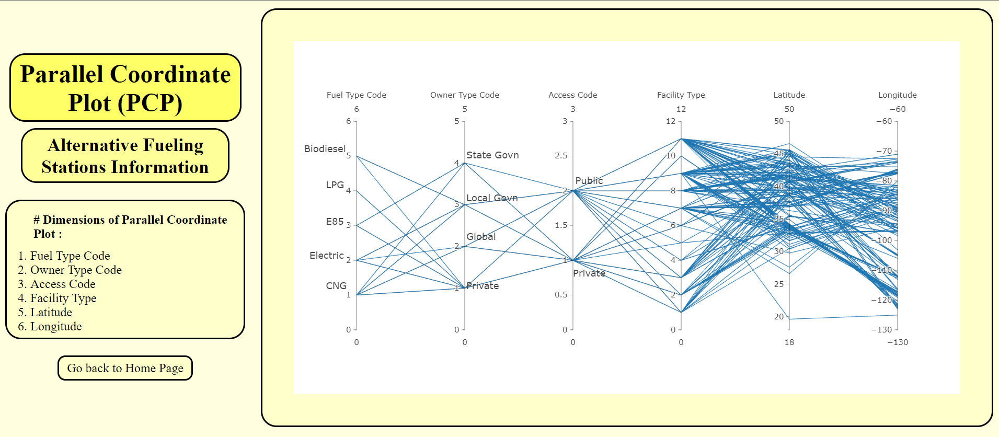

About Project
Author - Suyash Ajit Chavan (IMT2021048)
Welcome to our Data Visualization project, where we explore complex relationships and patterns in alternative fueling stations dataset through the lens of parallel coordinates plots. At the intersection of art and data science, we strive to make intricate data sets accessible and insightful. Our team is passionate about unraveling the stories hidden within the lines, showcasing the power of parallel coordinates in visualizing alternative fueling stations dataset. Join us on a journey of discovery as we transform raw data into compelling narratives, empowering you to glean valuable insights with each plotted line.